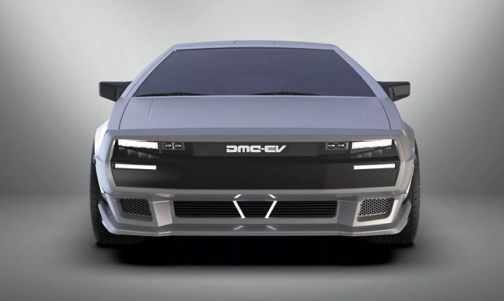

.jpg)
Авто із фільму «Назад у майбутнє» повернули у виробництво
Культовий DeLorean DMC-12 отримав друге життя. Авто з фільму «Назад у майбутнє» перетворили на електромобіль і випустять лімітованою серією. Про це повідомляється на сайті компанії Lynx Motors. Саме це американське ательє виконало тюнінг DeLorean DMC-12. Усього планують зібрати 100 таких електромобілів. Проєкт назвали Lynx DMC-EV.
Шасі та більшість кузовних деталей DeLorean DMC-12 залишили, проте дизайн передньої і задньої частини повністю новий. Також з'явилися обвіс і дифузор, а оптика стала світлодіодною. Салон DeLorean DMC-12 повністю переробили. На всю передню панель тепер розтягнуто два величезних екрани, встановлено й бездротову зарядку для смартфона. До того ж, замінено крісла та кермо, а в оздоблені використані шкіра і карбон.
.jpg)
Електромобіль DeLorean DMC-12 оснастили чотирма моторами. Їх характеристики тримають у секреті, проте заявлено, що розгін до сотні займатиме 4 с. Із батареєю CATL на 70 кВт.год запас ходу складе приблизно 400 км. Авто також отримало трекшн-контроль.